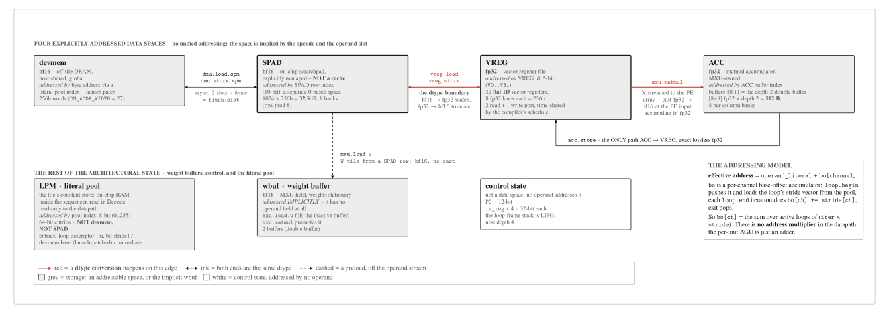
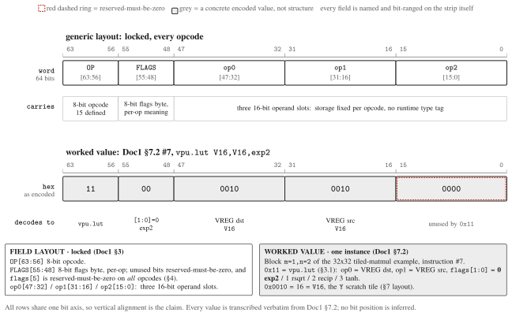

ISA: the compute-tile instruction set¶
mininpu · Doc 1 of 3 · Locked
Instruction Set Architecture reference for the mininpu matmul/vector accelerator compute tile, version 0.5.0.
ISA 0.5.0 · 15 opcodes · 64-bit word · in-order, no interlock
Spec vs RTL as-built
Spec: ISA 0.5.0 (frozen; amendments tracked in #381) · RTL as-built: 0.4.0 · cutover pending.
This page is the specification: it states what the ISA is. The hardware has
not caught up yet, so the generated opcode tables below
(derived from the mininpu/isa SSOT) report the as-built ISA_VERSION 0.4.0
opcode set. That lag is deliberate and tracked, not a contradiction: read this page's
prose for the spec, the generated tables for what today's RTL and ISS actually execute.
Table of contents¶
- Overview & Invariants
- State & Geometry
- Instruction Encoding
- Flags & Locked Decisions
- Timing & Reservation Contract
- Compiler Scheduling Contract
- Worked Example: 32x32 Tiled Matmul +
vpu.lutEpilogue - Deferred / Notes
01 Overview and Invariants¶
A small, statically-scheduled instruction set of 15 opcodes for a matmul/vector accelerator tile.
- Issue: in-order, single issue, 1 instruction/cycle.
- NO producer-busy scoreboard, NO hardware interlock. The hardware never stalls a consumer for an in-flight producer and never detects a clobbered in-flight operand.
- The compiler owns all hazard avoidance, latency padding, and structural serialization (see Section 6).
flush.slotis the only mid-program runtime synchronization primitive;haltis the terminal drain (end of kernel), not a mid-program sync.- Nonblocking set =
{mxu.matmul, mxu.load.w, mxu.acc.init, async-DMA}; every other op is blocking. - Instruction word: 64-bit fixed width; operand storage is fixed per opcode, no runtime type tag.
- dtype convention: bf16 in SPAD and DRAM (devmem); fp32 in VREG and ACC.
- Launch: a kernel is a binary of NPU assembly; the command processor loads it into
IRAM[0]and starts the sequencer, which runs to the terminalhalt.
02 Architectural State and Geometry¶
Four explicitly-addressed data spaces (analogous to CUDA .global / .shared / .reg plus a tensor accumulator), plus MXU weight buffers and control state. No unified addressing: the space is implied by the opcode/operand slot.

Fig. A7. ISA architectural state: the addressed data spaces and the datapath spine.
The four explicitly-addressed spaces in spine order, each with how it is addressed and how
big it is, plus the rest of the architectural state (wbuf, control, LPM). Red marks an
edge on which a dtype conversion happens: the SPAD--VREG boundary (bf16 to fp32 widen,
fp32 to bf16 truncate) and the X path into the PE array (cast fp32 to bf16 at the PE input,
accumulate in fp32). VREG is drawn in the flat 1D form this page specifies: 32 registers of
8 fp32 lanes (256b) each. No total LPM capacity is drawn -- that sizing is provisional (see
§2.1) and has no constant behind it in the SSOT.
| space | role | addressed by | geometry |
|---|---|---|---|
devmem |
off-tile DRAM (host-shared, global), bf16 | byte address via literal-pool index + launch patch | 256b words (DM_ADDR_WIDTH=27) |
SPAD |
on-chip scratchpad, bf16 (explicitly managed, NOT a cache) | SPAD row index (10-bit), separate 0-based space | 1024 x 256b = 32 KiB, 8 banks (addr % 8) |
VREG |
vector register file, fp32 | VREG id (5-bit, 0..31) | 32 flat 1D fp32 vector registers (2r1w); as-built RTL still 2D [8x8] - see §4 |
ACC |
matmul accumulator, fp32 (MXU-owned) | ACC buffer index; buffers {0,1} both used (depth-2 double-buffer) | [8x8] fp32 x depth 2 = 512 B, 8 per-column banks |
wbuf |
weight buffer (MXU, stationary) | implicit; mxu.load.w fills inactive, mxu.matmul promotes |
2 (double buffer) |
control |
PC + induction vars | - | PC 12-bit; iv_reg x4 (LIFO nest depth 4), 32-bit each |
LPM |
literal pool: on-chip constant / param RAM in the tile sequencer (baked + launch-patched, read-only to the datapath) | pool-index (8-bit, 0..255) | 256 x 64b = ~2 KiB (provisional; final sizing during implementation); NOT devmem, NOT SPAD |
Datapath spine¶
| stage | detail | outgoing edge |
|---|---|---|
| devmem | off-tile DRAM, bf16 | DMU: async DRAM to SPAD copy. |
| SPAD | on-chip scratchpad, bf16 | dtype boundary: vreg.load widens bf16 to fp32; vreg.store truncates fp32 to bf16. |
| VREG | register file, fp32 | MXU streams X (cast fp32 to bf16 at the PE input); output lands in ACC. |
| ACC | accumulator, fp32 | acc.store drains ACC to VREG, exact lossless fp32. |
- W path: SPAD to wbuf via
mxu.load.w(weights stationary). - X path: VREG to PE array, streamed, cast fp32 to bf16 at the PE input.
- Output path: PE array to ACC.
- dtype boundary sits only at the SPAD-VREG edge.
2.1 Literal pool (LPM)¶
A fifth on-chip element, beside the four data spaces plus wbuf and control. It is the tile's constant store.
- Address space: a separate pool-index space, 8-bit index (0..255); 256 x 64b entries (~2 KiB), provisional (final sizing during implementation); on-chip RAM inside the tile sequencer. NOT devmem, NOT SPAD.
- Structure: an array of 64-bit constant entries. Entry classes: (a) loop descriptor =
{hi bound, packed bo-stride vector}; (b) devmem base address (launch-patched); (c) scalar immediate. - Access: read-only to the datapath; read by the sequencer in Decode. Written once per launch = compiler-baked constants + command-processor launch patch (devmem bases via
program_id/GRID_LINEAR+kernel_args). Part of the kernel image (loaded with the code). - Operands that reference it:
loop.begin.op1(pool index of the loop descriptor {hi, bo-stride vector}),dmu.*.op1(devmem base; stride atpool[idx+1]),vpu.simd.op2(immediate whenbcast=imm).
2.2 Addressing model¶
- Effective address of a memory/register operand =
operand_literal + bo[channel], wherebois a per-channel base-offset accumulator maintained by the sequencer. There is no address multiplier in the datapath: the per-unit AGU is just an adder. bois maintained by stride-accumulation over the loop nest:loop.beginpushes the currentbo(LIFO) and loads the loop's stride vector from the pool into the loop frame; eachloop.enditeration doesbo[ch] += stride[ch]; loop exit pops.- So
bo[ch] = sum over active loops of (iter * stride). The induction variable is the loop counter; the address math is the incremental accumulation (equivalent toconst + sum(iv*stride)but multiplier-free).
03 Instruction Encoding¶

Fig. 1.64-bit instruction word: field layout and decode. Single fixed-width word, no runtime type tag · operand storage fixed per opcode · layout from §3, worked value from §7.2.
Single 64-bit word, fixed field layout.
63 56 55 48 47 32 31 16 15 0
+-----------+----------+------------+------------+------------+
| OP[7:0] | FLAGS[7:0]| op0[15:0] | op1[15:0] | op2[15:0] |
+-----------+----------+------------+------------+------------+
OP[63:56]- 8-bit opcode.FLAGS[55:48]- 8-bit flags byte (per-op; unused bits reserved-must-be-zero).op0[47:32]/op1[31:16]/op2[15:0]- three 16-bit operand slots, storage fixed per opcode.
3.1 Opcode table (SSOT)¶
| opcode | mnemonic | op0 | op1 | op2 | flags | writeback |
|---|---|---|---|---|---|---|
0x00 |
mxu.load.w |
SPAD row (W tile) | - | - | [0]=transB (reverse weight-row load order) |
wbuf (inactive) |
0x01 |
mxu.matmul |
ACC (acc_out) |
VREG id (X, streamed) | - | [0]=accum, [1]=causal |
ACC |
0x02 |
mxu.acc.init |
ACC (acc_out) |
SPAD row (bias, 1xN) | - | - | ACC (bias broadcast to all rows) |
0x10 |
vpu.reduce |
VREG dst | VREG src | - | [0]=0 sum / 1 max |
VREG (per-row scalar to col0) |
0x11 |
vpu.lut |
VREG dst | VREG src | - | [1:0]=0 exp2 / 1 rsqrt / 2 recip / 3 tanh |
VREG |
0x12 |
vpu.simd |
VREG dst | VREG a | VREG b (or pool-imm if bcast=imm) |
[4:2]=funct (3-bit, 7 defined: 0 add, 1 sub, 2 mul, 3 max, 4 fma, 5 mov, 6 div; 7 reserved), [1:0]=bcast{none,row,col,imm} |
VREG |
0x30 |
acc.store |
VREG dst | ACC src | - | - | VREG (fp32 lossless) |
0x32 |
vreg.load |
VREG dst | SPAD row (src) | - | - | VREG (bf16 to fp32 widen) |
0x33 |
vreg.store |
SPAD row (dst) | VREG src | - | - | SPAD (fp32 to bf16 truncate) |
0x40 |
dmu.load.spm |
SPAD row (dst) | devmem addr (literal-pool index; stride at pool[idx+1]) |
shape = (rows-1)<<8 \| (cols-1) |
[4]=IMM_OP1 |
SPAD region |
0x42 |
dmu.store.spm |
SPAD row (src) | devmem addr (pool index) | shape (0xFFFF = derive at lowering) |
[4]=IMM_OP1 |
DRAM |
0x50 |
loop.begin |
iv id | loop descriptor (pool index): | (lo<<8) \| step, both 8-bit literals |
[4]=IMM_OP1 (immediate hi; no-bo loops only) |
push loop frame, IV=lo |
0x51 |
loop.end |
iv id | - | - | - | IV += step; branch to body if IV < hi |
0x53 |
flush.slot |
slot bitmask (16-bit immediate) | - | - | - | none (async-DMA region fence) |
0x5F |
halt |
- | - | - | - | none (drain all DMU, then assert done) |
3.2 Per-op semantics¶
mxu.load.w- load W tile from SPAD[op0] into the inactive wbuf;transBreverses row load order; eachmxu.matmulconsumes exactly one precedingmxu.load.w.-
mxu.matmul- streaming matmul into ACC[op0] from X = VREG[op1] and the active stationary weights (X cast fp32 to bf16 at the PE input):causalmasks the output upper triangle. A matmul with no pendingmxu.load.wis illegal. -mxu.acc.init- seed ACC[op0] with a 1xN bias from SPAD[op1], broadcast to all rows. -vpu.reduce- per-row reduce of VREG[op1] to VREG[op0] col0; flag selects sum / max. -vpu.lut- elementwise unary exp2 / rsqrt / recip / tanh, VREG to VREG. The function set is closed at these four (#385 §5 #7, #381 row 5).geluis not a LUT function: it is decomposed by the compiler into a primitive sequence overvpu.lut tanh+vpu.simd, with no dedicatedvpu.lutslot and no dedicated HW. As-built, 0.4.0 still ships the fusedvpu.gelu(0x1D) backed byvpu_gelu_unit.sv; retiring that unit and emitting the decomposition is rework B work. -vpu.simd- elementwise ALU with broadcast modenone/row/col/imm.functisflags[4:2], 3 bits / 8 slots, 7 defined:0 add, 1 sub, 2 mul, 3 max, 4 fma, 5 mov, 6 div(slot7reserved-must-be-zero).divis #381 AMENDMENT 2, confirmed by the owner in #385 §5 #64: the 8-rowdiv.bcastarm already exists in RTL and GPT-2 softmax uses it, sodivkeeps a slot rather than lowering torecip+mul. Not every(funct, bcast, shape)combination has an RTL arm; combinations with no arm are not encodable and raiseillegal_op(arm inventory: #381). -acc.store- drain ACC[op1] to VREG[op0], exact lossless fp32 (no conversion). -vreg.load- SPAD[op1] to VREG[op0], widen bf16 to fp32. -vreg.store- VREG[op1] to SPAD[op0], truncate fp32 to bf16. -dmu.load.spm- async DRAM to SPAD; async, 2 slots (DMA_SLOT_COUNT=2); region unsafe to consume until a matchingflush.slot. -dmu.store.spm- async SPAD to DRAM;op2=0xFFFFderives shape at lowering. -loop.begin- push a loop frame onop0, setIV=lo(LIFO, nest depth 4).op1is the pool index of the loop descriptor{hi bound, bo-stride vector}(always resident in the literal pool, so the stride vector is always available); theIMM_OP1flag instead supplies an immediatehiand is used only for loops that drive nobostrides. -loop.end-IV += step; branch to body whileIV < hi, else pop. -flush.slot- block until the masked DMU slot(s) report done; the only mid-program runtime sync (haltis the terminal drain, not a mid-program sync). -halt- drain all outstanding DMU, then assertdone; ends the kernel.
Generated opcode reference (as-built)¶
The tables above and in §3.1 state the 0.5.0 spec (the 15-opcode target this
page normatively documents). The tables below are generated from the mininpu/isa
SSOT and report the as-built set today (ISA_VERSION 0.4.0); they are drift-guarded
by dv/test_abi_contract.py::test_generated_docs_up_to_date and regenerated with
make generate-docs-md. Read the spec above for what the ISA is, and the generated
tables here for what today's RTL and ISS execute.
Generated from mininpu/isa, the as-built set is ISA_VERSION 0.4.0: 28 active [v1] opcodes plus 12 reserved [serving] opcode values. Every count and table here is derived from the SSOT at generation time, so it cannot drift from code.
Notation: ACC[r] = fp32 tile row, SPM[r] = bf16 tile row, VREG[v] = fp32 vector reg.
The opcode high nibble names the dispatch group (0x0_ matmul, 0x1_/0x2_ vector, 0x3_ cast, 0x4_ DMA, 0x5_ control), which the sequencer routes to an engine or control sub-FSM.
Instruction-word field layout (SSOT)¶
The field layout is the SSOT in mininpu/isa (FIELDS_INSTR) and is decoded layout-only before dispatch. Bit positions are read from FIELDS_INSTR:
| Field | Bits | Role |
|---|---|---|
op |
[63:56] |
8-bit operation selector; the dispatch key (the Opcode column below). |
flags |
[55:48] |
8-bit per-instruction flags; see the flag table below. flags[7:6] = storage dtype (BF16 in [v1]). |
op0 |
[47:32] |
16-bit operand 0. |
op1 |
[31:16] |
16-bit operand 1. |
op2 |
[15:0] |
16-bit operand 2. |
Flags¶
Bit positions are read from the isa.FLAG_* constants. A flag bit is only meaningful for the opcodes whose Semantics column names it:
| Bits | SSOT constant | Note |
|---|---|---|
flags[0] |
FLAG_MATMUL_ACCUMULATE_BIT |
|
flags[0] |
FLAG_MXU_LOAD_W_TRANS_B_BIT |
|
flags[1] |
FLAG_MATMUL_CAUSAL_BIT |
|
flags[3] |
FLAG_IMM_OP0_BIT |
|
flags[4] |
FLAG_IMM_OP1_BIT |
|
flags[5] |
FLAG_ASYNC_BIT |
|
flags[7:6] |
FLAG_RESERVED_HI_LSB / FLAG_RESERVED_HI_WIDTH |
storage dtype; BF16 in [v1] |
Wide immediates: the literal pool¶
A wide immediate does not fit a 16-bit operand slot, so the slot carries a literal-pool INDEX and the pool entry carries the value(s). The layout below is read from isa.POOL_LAYOUT.
| Opcode | Mnemonic | Pool-index slot | Adjacent slots | Names |
|---|---|---|---|---|
0x27 |
vpu.fma.imm |
op2 |
2 | scale, bias |
0x40 |
dmu.load.spm |
op1 |
2 | dram_addr, dram_stride |
0x42 |
dmu.store.spm |
op1 |
2 | dram_addr, dram_stride |
Active instruction set (as-built)¶
The as-built v1 opcode set: 28 opcodes ([v1], ISA_VERSION 0.4.0). Every opcode below is implemented in RTL decode/dispatch and the functional simulator.
| Opcode | Mnemonic | Semantics |
|---|---|---|
0x00 |
mxu.load.w |
weight_buf_next <- SPM[spm_w] (N×N tile; transB=flags[0] reverses load order; no compute, no switch) |
0x01 |
mxu.matmul |
acc_out = (accum? acc_out:0) + spm_x @ W_active^T; implicit switch promotes last mxu.load.w to active; causal=flags[1] |
0x10 |
vpu.rowmax |
VREG[dst][i] = max_j ACC[src][i,j] |
0x11 |
vpu.rowsum |
VREG[dst][i] = Σ_j ACC[src][i,j] |
0x12 |
vpu.exp2 |
ACC[dst][i,j] = exp2(ACC[src][i,j]) (LUT in HW) |
0x13 |
vpu.scale.bcast |
ACC[dst][i,j] = VREG[c][i] * ACC[src][i,j] (bcast cols) |
0x14 |
vpu.scale.imm |
ACC[dst][i,j] = imm32 * ACC[src][i,j] |
0x15 |
vpu.sub.bcast |
ACC[dst][i,j] = ACC[src][i,j] − VREG[c][i] |
0x16 |
vpu.div.bcast |
ACC[dst][i,j] = ACC[src][i,j] / VREG[c][i] |
0x17 |
vpu.zero.acc |
ACC[dst][0:rows,0:cols] = 0 |
0x19 |
vpu.mul.acc |
ACC[dst][i,j] = ACC[a][i,j] * ACC[b][i,j] |
0x1A |
vpu.add.acc |
ACC[dst][i,j] = ACC[a][i,j] + ACC[b][i,j] |
0x1B |
vpu.add.col.bcast |
ACC[dst][i,j] = ACC[src][i,j] + VREG[c][j] (bcast rows; LN beta / Linear bias) |
0x1C |
vpu.scale.col.bcast |
ACC[dst][i,j] = VREG[c][j] * ACC[src][i,j] (bcast rows) |
0x1D |
vpu.gelu |
ACC[dst][i,j] = gelu_new(x); tanh-approx GELU, tanh via BRAM LUT |
0x26 |
vpu.rsqrt |
VREG[dst][i] = 1/sqrt(VREG[src][i]); domain src>0 |
0x27 |
vpu.fma.imm |
VREG[dst][i] = VREG[src][i]*scale + bias |
0x30 |
acc.store |
SPM[dst] = bf16(ACC[src]), row-wise, truncation (upper 16 bits) |
0x31 |
acc.load |
ACC[dst] = fp32(bf16 SPM[src]), row-wise, exact (inverse of acc.store) |
0x32 |
vreg.load |
VREG[dst] = fp32(SPM[src]) for a 1×N bf16 row |
0x33 |
vreg.store |
SPM[dst] = bf16(VREG[src]), row-wise, truncation (fp32->bf16 narrow) |
0x34 |
acc.init |
ACC[dst] = broadcast(fp32(bf16 SPM[src])); seed all N ACC rows with the 1xN bias row |
0x40 |
dmu.load.spm |
SPM[dst] <- DRAM bf16 (row-major, strided) |
0x42 |
dmu.store.spm |
DRAM <- SPM[src] bf16 (default stride = cols×2) |
0x50 |
loop.begin |
push loop frame; IV = lo. Bounds literal-only (D4) |
0x51 |
loop.end |
IV += step; if IV < hi jump to loop body |
0x53 |
flush.slot |
masked fence; waits only for slots set in op0 mask |
0x5F |
halt |
drain all outstanding DMA slots; then assert done (committed) |
Reserved opcode space¶
12 opcodes ([serving]). These opcode VALUES are reserved on main but are not active here: no encoder, no RTL, no ISS handler on main. Implementation lives on the serving extension branch. The Semantics column documents each reserved value's intended future behaviour, for reference only.
| Opcode | Mnemonic | Semantics |
|---|---|---|
0x20 |
vpu.maximum |
VREG[dst][i] = max(VREG[a][i], VREG[b][i]) |
0x21 |
vpu.fma |
VREG[dst][i] = VREG[a][i]*VREG[b][i] + VREG[d][i] |
0x22 |
vpu.exp2.vreg |
VREG[dst][i] = exp2(VREG[src][i]) (same LUT contract) |
0x23 |
vpu.sub.vreg |
VREG[dst][i] = VREG[a][i] − VREG[b][i] |
0x24 |
vpu.movi |
VREG[dst][0:rows] = broadcast(imm32) |
0x25 |
vpu.copy.vreg |
VREG[dst] = VREG[src] (register rename) |
0x28 |
vpu.add.vreg |
VREG[dst][i] = VREG[a][i] + VREG[b][i] |
0x29 |
vpu.mul.vreg |
VREG[dst][i] = VREG[a][i] * VREG[b][i] |
0x2A |
vpu.load.imm |
VREG[dst][0:BANKING] = pool[idx..idx+BANKING-1] (fp32) |
0x48 |
dmu.load.spm.mi |
SPM[dst] <- DRAM (bf16, MultiLinearAddr) |
0x4C |
dmu.store.spm.mi |
DRAM <- SPM[src] (bf16, MultiLinearAddr) |
0x55 |
loop.begin.csr |
IV = lo (op0 literal), hi = KERNEL_ARG[op1], step = op2 literal (default 1) |
04 Flags and Locked Decisions¶
Locked
flags[5] (ACC_TILE) is dropped from vpu.simd; the VPU is VREG-only. Bit 5 is reserved-must-be-zero on all opcodes.
Locked
ACC buffers {0,1} are both used for depth-2 double-buffering (acc_out / acc_src in [0, ACC_DEPTH=2)). The existing ACC buffer-index operand field is now plumbed to select the buffer (the depth index; no encoding change); an index >= ACC_DEPTH is still an illegal-op. This depth-2 buffer index is distinct from the 8 per-column banks (the physical column organization of the [8x8] accumulator).
Design target · rework B (shipped RTL still 2D)
VREG is a flat 1D fp32 vector register file (RISC-V-style; 5-bit id
unchanged). The earlier "2D [8x8] tile" lock is withdrawn: its
load-bearing premise (that the MXU streams tiles directly from VRegs) is
false for this design - the MXU bursts X into its own x_matrix staging
buffer, so a standard flat vector RF is the cleaner model. Owner ruling:
#385 §5 #1, rationale
in #381 Decision B.
As-built: the shipped RTL (vreg_rf.sv, mxu.sv) is still 2D; the
flat-1D rework lands in rework B (vreg_rf, addressing, MXU S_LOAD_X,
LSU, operand encoding). mininpu/hwparams.py (VREG_SIZE = N) is already 1D.
Span across multiple registers is expressed by register grouping
(LMUL-style), not by a shape flag; the encoding for that is open and
deferred to B's design.
Locked
DMU is async-only: the async-mode flag is retired; DMU flags[5] is reserved-must-be-zero.
Reserved-must-be-zero¶
- All unused flag bits on every opcode.
flags[5]on all opcodes (droppedACC_TILE).- DMU
flags[5](retired async-mode flag).
05 Timing and Reservation Contract¶
Because there is no hardware interlock or scoreboard, the per-instruction cycle-accurate access windows are a normative compiler-hardware contract.
5.0 Notation¶
Single definition point for every symbol used across this document. Kind distinguishes ISA-visible structural constants from RTL / synth-measured implementation values (not locked) from reference/index symbols.
| symbol | meaning | kind | value / status |
|---|---|---|---|
t |
issue cycle of an instruction (reference point for all access windows) | reference | - |
N |
systolic tile dimension (rows/cols of the array; also the whole-tile-row width) | STRUCTURAL, ISA-visible | 8 (baseline) |
2N-1 |
systolic array fill/drain span | STRUCTURAL | 15 at N=8 |
d |
matmul issue-to-first-X-read offset: matmul reads VREG[X] over [t+d, t+d+N) |
RTL / synth-measured | not a single localparam: S_LOAD_ACC (1 cy) then S_LOAD_X begins the X burst (mxu.sv FSM). Small; still RTL-measured, not locked here (see 5.1) |
L_matmul |
matmul latency: issue to ACC written (ACC valid at t+L_matmul) |
RTL / synth-measured | not a single localparam: S_LOAD_X burst + systolic fill (17) + S_CAPTURE drain (mxu.sv FSM). Still RTL / synth-measured (see 5.1) |
R_mxu |
the MXU's VREG read PORT used to stream X (a port name, not a latency) | port id | - |
L_ldw |
mxu.load.w latency: issue to inactive wbuf loaded |
RTL / synth-measured | ~N |
D_vpu |
VPU pipeline depth = per-row drain latency (result at t+D_vpu); row-pipelined for the single-source SIMD ops (1 tile-row/cycle), gelu / exp2 / two-source latency-serial (1 row / D_vpu) |
RTL / synth-measured, NOT a locked constant | about 23 (measured after the fp-pipeline pass) |
PE_LATENCY (MXU PE pipeline depth) |
registered-MAC stages inside each PE (adds to the 2N-1 fill) |
RTL / synth-measured | 2 (measured); matmul fill = 2N-1 + PE_LATENCY = 17 |
lo / hi / step |
loop lower bound / upper bound / increment (lo, step 8-bit immediate; hi from the literal-pool descriptor) |
index | - |
iv |
loop induction variable (per active loop frame) | index | - |
bo[channel] |
per-channel base-offset accumulator; eff_addr = operand_literal + bo[channel] |
state | 8 channels |
m, n, k |
output-row-tile / output-col-tile / contraction tile indices in the 4x4x4 grid | index | 0..3 |
- The contract lives in the ISA but is implementation-versioned: the structure is fixed now; the absolute offsets are TBD (RTL-measured) and locked by the
sim == synthrequirement. - A kernel binary declares the timing-rev it was compiled against; a hardware timing-rev mismatch is rejected / flagged. This is the concrete form of "recompile if latencies change".
- The concrete structural values are
Nand the systolic fill2N-1. The VPU pipeline depthD_vpu, the MXU PE pipeline depth, the offsets (d,L_matmul), and all absolute numbers are RTL / synth-timing measured implementation values -D_vpuis currently about 23 (measured after the fp-pipeline pass), NOT an ISA-visible structural constant. - Throughput-bound, not latency-bound: these per-instruction latencies (including
D_vpuand the matmul systolic fill) are negligible for performance - the tile is throughput-bound, so pipeline depth may grow to meet 200 MHz while throughput stays 1 tile-row/cycle (VPU) and 1 column/cycle (MXU). The VPU is row-pipelined for the single-source SIMD ops (scale.bcast,scale.col.bcast,scale.imm,sub.bcast,add.col.bcast): 1 tile-row issued per cycle, multiple rows in flight, andD_vpuis the per-row drain latency, amortized across the tile-loop. Row-pipelining is partial:gelu/exp2and the two-source ops stay latency-serial (each row drains the fullD_vpubefore the next issues). The deep fp / reduce-tree pipelining (combinationalfp_mul, registered IEEEfp_add) is intended design, not overhead.
Structural access windows (offsets symbolic; issue cycle = t):
| instruction | reads (port, window) | writes (port, @cycle) | notes |
|---|---|---|---|
mxu.matmul |
VREG[X] on R_mxu over [t+d, t+d+N) (1 column/cycle); wbuf(active) implicitly |
ACC at t + L_matmul |
the PE MAC is registered for 200 MHz with PE_LATENCY = 2 (measured), so fill = 2N-1 + PE_LATENCY = 17; VREG[X] is WAR-free only after t+d+N |
mxu.load.w |
SPAD over ~N cycles into wbuf(inactive) |
wbuf(inactive) |
double-buffered, so it overlaps the concurrent matmul streaming the other buffer |
mxu.acc.init |
SPAD bias row |
ACC (broadcast to all rows) |
- |
vpu.reduce / vpu.lut / vpu.simd |
VREG (x2 reads for simd, on the two whole-tile-row read ports) |
VREG on the single write port at t + D_vpu |
D_vpu = VPU pipeline depth, RTL / synth-measured (as-built 0.4.0: 23, measured after the fp-pipeline pass); an implementation number, not a locked constant. Fixed and uniform across every function, so a result is available at issue + D_vpu. The as-built depth-setter is the fused gelu, which 0.5.0 retires, so D_vpu may shrink at the cutover (VPU microarch) |
acc.store |
ACC |
VREG on the single write port (LSU-driven) |
exact lossless fp32 |
vreg.load / vreg.store |
LSU: SPAD <-> VREG |
LSU: SPAD <-> VREG |
bf16 <-> fp32 cast at the boundary |
VREG is 2r1w: the VPU writeback and the LSU writeback (acc.store / vreg.load) name the same single physical write port, time-shared by the compiler schedule so two writes never collide in a cycle. A 2nd write port is a sizing option only, not part of the baseline.
5.1 Reservation-table latency ledger¶
Compiler contract: a stale value is a miscompile. Every figure below is RTL / synth-measured and implementation-versioned (it moves with the fp-pipeline pass). Each value in this table was re-verified against origin/main (cited by file:line); the old implementation.md prose was not taken on trust.
Table: per-FU latency ledger, at the baseline N = 8 / BANKING = 8. Verified against origin/main.
| quantity | value (N=8) |
RTL source (origin/main) |
note |
|---|---|---|---|
N |
8 | npu_config_pkg.sv localparam int N = 8 |
structural, ISA-visible |
MEM_LATENCY |
2 | npu_config_pkg.sv localparam int MEM_LATENCY = 2 |
SPAD/mem read response |
PE_LATENCY |
2 | npu_config_pkg.sv localparam int PE_LATENCY = 2 (= hwparams.py PE_LATENCY) |
registered MAC stages per PE |
SKEW |
3 | mxu.sv localparam SKEW = PE_LATENCY + 1 |
systolic row skew |
| matmul fill | 17 | mxu.sv (2N-1 + PE_LATENCY = 15 + 2) |
systolic fill/drain span |
D_vpu |
23 | vpu_ctrl.sv localparam logic [4:0] D_VPU = 5'd23 |
uniform VPU issue→write; NOT a locked constant (may shrink at the 0.5.0 gelu retire) |
| exp2 | 5 | fpu/fp_exp2_bram.sv header LATENCY: 5 register stages |
BRAM-LUT exp2 |
reduce tree (rowsum, ADD) |
9 | fpu/fp_reduce_tree.sv LATENCY = 3*DEPTH, DEPTH = $clog2(N) = 3 |
2*DEPTH fp_add FFs + DEPTH inter-level FFs |
reduce tree (rowmax, MAX) |
3 | fpu/fp_reduce_tree.sv LATENCY = DEPTH (MAX arm) |
one FF per level |
| LSU | 10 | lsu.sv FIXED LATENCY = ROWS + SPAD_RD_LATENCY (ROWS=8, SPAD_RD_LATENCY=2) |
9 at RL=1 |
Not resolvable to a single constant here (stated, not fabricated): d (issue-to-first-X-read) and L_matmul (issue-to-ACC-written) are composed matmul-FSM offsets, not localparams. d is S_LOAD_ACC (1 cy) then the S_LOAD_X burst begins; L_matmul is the S_LOAD_X burst + the systolic fill (17) + the S_CAPTURE drain. The S_RUN window itself is bounded by 5N + PE_LAT + SKEW_SPAN (mxu.sv), which is synth-sensitive. They remain RTL / synth-measured and are the compiler's to lock per timing-rev; no absolute value is asserted here.
FIXED once measured · sim == synth
The per-FU latencies in 5.1 are verified against origin/main at the N=8 baseline. They are RTL / synth-measured and implementation-versioned, not ISA-visible: only N and the systolic fill 2N-1 are structural constants. The matmul access-window offsets d and L_matmul are composed FSM offsets, not single localparams, and stay RTL-measured. All latencies are FIXED and data-independent once measured, because the no-scoreboard model relies on it: simulation latency must equal synthesis latency. A wrong locked latency (a value that disagrees with the RTL-measured one) silently miscompiles.
06 Compiler Scheduling Contract¶
With no interlock and no scoreboard, program correctness depends entirely on the static schedule. The compiler MUST obey every rule.
- RAW (latency-respecting placement): schedule a consumer no earlier than producer-issue + producer-latency; fill gaps with independent ops or NOPs.
- WAR on inputs is unguarded: never overwrite a VREG / SPAD row / ACC buffer still being read by an in-flight instruction.
- WAW ordering: two writes to the same destination must be program-ordered with non-overlapping write windows.
- Structural hazards: one matmul at a time; exactly one
mxu.load.wper matmul (single inactive wbuf); one VPU op-stream at a time. - VREG 2r1w (whole-tile-row): at most 2 reads + 1 write per cycle; keep the foreground unit's (VPU / LSU) VREG accesses in cycles disjoint from the MXU X-read burst (temporal separation, not banking).
- DMU ordering: insert
flush.slotbefore consuming admu.load.spmregion; ensure producingvreg.stores complete before admu.store.spmreads; fence two async DMAs to the same region. - ACC discipline: seed (
mxu.acc.initoraccum=0), accumulate (accum=1, same buffer, in order), drain (acc.store, LSU-driven). - Loops: literal-only trip counts (
lo/step8-bit,hifrom the pool); nest depth 4 (LIFO); no runtime-data-derived counts. - Addressing: compile-baked (literals + launch-patched pool indices + IV-relative
base + iv*stride); no runtime data-dependent addressing in v1. - Recompilation: a binary is valid only for the latencies it was compiled against; recompile if any FU latency,
N, orD_vpuchanges.
07 Worked Example: 32x32 Tiled Matmul + Bias + vpu.lut Epilogue¶
A full tile-loop example: f(X @ W^T + b), where f is any elementwise vpu.lut function (the example issues exp2; the activation is incidental to what this section teaches). Assume X already in VREG, and W and bias already in SPAD (DMU excluded). Geometry N=8, so a 32x32 matmul is a 4x4x4 tile grid (m,n,k in 0..3).
- Layout:
X[m][k]at VREG id4m+k;YscratchVREG16;Wrow =16n+4k; bias row =n;Yrow =16m+4n.
7.0 Initial architectural state¶
What lives where before the tile-loop runs. Note the dtype boundary: bf16 in SPAD, fp32 in VREG and ACC (the cast sits at the SPAD-VREG edge).
| space | dtype / geometry | contents before the loop |
|---|---|---|
VREG |
fp32, as-built 32 x [8x8] | X[m][k] tile at id 4m+k (ids 0..15); Y scratch at V16 - the compute working set |
SPAD |
bf16 | W^T rows at row 16n+4k; bias rows at row n (base B_base) - the matmul operands |
LPM |
64b entries | the loop descriptors pool[0..2] + any pooled bases (see 7.0b) |
ACC |
fp32, MXU-owned, depth-2 | empty; seeded per (m,n) block by acc.init, drained by acc.store |
7.0b Literal pool contents¶
The concrete pool entries this kernel needs, so loop.begin op1 = pool[idx] (referenced in 7.2 as pool[2]={hi=4, k bo-strides}) is grounded. Stride values are taken from the 7.1 loop.end comments and match the 7.3 bo trace.
| entry | class | contents |
|---|---|---|
pool[0] |
m-loop descriptor | {hi=4; bo-stride: bo_X+=4, bo_Ys+=16} |
pool[1] |
n-loop descriptor | {hi=4; bo_W+=16, bo_B+=1, bo_Ys+=4} |
pool[2] |
k-loop descriptor | {hi=4; bo_X+=1, bo_W+=4} |
pool[3..] |
pooled bases (launch-patched) | B_base, W_base, X_base, Y_base; the devmem base is patched at launch |
7.1 Static program (body once, 12 static instructions)¶
loop.begin m (iv0,0,4,1) ; push bo
loop.begin n (iv1,0,4,1) ; push bo
acc.init ACC0, B_base ; bias row = B_base + bo_B
loop.begin k (iv2,0,4,1) ; push bo
load.w W_base ; W row = W_base + bo_W
matmul ACC0, X_base, accum ; X id = X_base + bo_X
loop.end k ; iter: bo_X+=1, bo_W+=4 | exit: pop
acc.store V16, ACC0
vpu.lut V16, V16, exp2 ; fn=0; see the gelu note below
vreg.store Y_base, V16 ; Y row = Y_base + bo_Ys
loop.end n ; iter: bo_W+=16, bo_B+=1, bo_Ys+=4 | exit: pop
loop.end m ; iter: bo_X+=4, bo_Ys+=16 | exit: pop
Why exp2 and not gelu (owner ruling #385 §5 #7)
This example previously issued vpu.lut V16, V16, gelu with FLAGS = 02. Under
the ruled function set {0 exp2, 1 rsqrt, 2 recip, 3 tanh} there is no gelu
slot, and 0x02 now decodes to recip - so the old example was doubly wrong.
It is rewritten to exp2 (FLAGS = 00), which has a tile-shaped RTL arm and is
unambiguous. The choice of activation is incidental to what §7 demonstrates (the
loop / base-offset / double-buffer structure).
Why the swap is timing-neutral: exp2 and gelu are the same row shape -
both dispatch to VPU_ACC_ROW and run latency-serial, one tile-row per
D_vpu (vpu_ctrl.sv:56), so the §7.2-§7.4 tail numbers are unchanged. The
shared uniform terminal alone is not the reason, and this argument does not
generalize to every vpu.lut function: rsqrt dispatches to VPU_VREG_EXEC
(vpu_ctrl.sv:63) and runs parallel across all 8 rows in ~24 cycles rather
than 8 x 24, an 8x row-shape difference even though its issue-to-write
terminal is the identical D_vpu. Substituting rsqrt here would change the tail.
The gelu decomposition sequence is deliberately not written here, and writing
it is blocked on two missing arms. gelu_new needs a tile-shaped tanh -
as-built 0.4.0 has no ISA-visible tanh op at all (fp_tanh_bram exists only
as a per-lane 1-clk primitive wired inside vpu_gelu_unit.sv:120, reachable only
via the fused vpu.gelu; the as-built TANH(43) arm is 1-row only) - and a
tile-shaped fma/add with an immediate: the one multiply-add arm that does
exist, OP_VPU_FMA_IMM = 0x27, is VREG-only (VPU_VREG_EXEC), not the
tile-shaped ACC-row arm a decomposed gelu would need. The shape axis (flags[5])
is itself open pending rework B's flat-1D VREG design. Deriving the sequence is
rework B work, tracked in
#381; inventing one here
would freeze a convention that has not been decided.
7.2 64-bit encoding (example block m=1, n=2)¶
Word = OP[63:56] | FLAGS[55:48] | op0[47:32] | op1[31:16] | op2[15:0].
| # | asm | OP | FLAGS | op0 | op1 | op2 | effective addr |
|---|---|---|---|---|---|---|---|
| 1 | acc.init ACC0,B(n) |
02 | 00 | 0000 | 0200 | 0000 | bias = 0x200 + bo_B(2) = 0x202 |
| 2 | loop.begin k |
50 | 00 | 0000 | 0002 | 0001 | op1=pool[2]={hi=4, k bo-strides}; op2 lo<<8\|step=0x0001 |
| 3 | load.w W |
00 | 00 | 0000 | 0000 | 0000 | W row = 0 + bo_W(0x20) + k*4 |
| 4 | matmul ACC0,X,accum |
01 | 01 | 0000 | 0000 | 0000 | X id = 0 + bo_X(4) + k = 4..7 |
| 5 | loop.end k |
51 | 00 | 0000 | 0000 | 0000 | iv+=1, branch if k<4 |
| 6 | acc.store V16,ACC0 |
30 | 00 | 0010 | 0000 | 0000 | - |
| 7 | vpu.lut V16,V16,exp2 |
11 | 00 | 0010 | 0010 | 0000 | FLAGS [1:0]=0 -> fn=exp2 |
| 8 | vreg.store Y,V16 |
33 | 00 | 0300 | 0010 | 0000 | Y row = 0x300 + bo_Ys(0x18) = 0x318 |
7.3 Base-offset (bo) trace¶
| block (m,n) | bo_B (init) | bo_X @k=0..3 | bo_W @k=0..3 | bo_Ys (store) |
|---|---|---|---|---|
| (0,0) | 0 | 0,1,2,3 | 0,4,8,12 | 0 |
| (0,1) | 1 | 0,1,2,3 | 16,20,24,28 | 4 |
| (1,0) | 0 | 4,5,6,7 | 0,4,8,12 | 16 |
| (3,3) | 3 | 12,13,14,15 | 48,52,56,60 | 60 |
7.4 Cycle-level Gantt for one (m,n) block¶
Structural (N=8); the absolute L_* are implementation-versioned - the Gantt below uses the current RTL/synth-measured example latencies.
cy -> 0 2 4 6 8 10 12 14 16 ...(N=8 units)
SEQ : Iai Ilb Ilw0 [nop/indep to cover L_ldw] Imm0 Ilw1 Imm1 Ilw2 Imm2 Ilw3 Imm3 Ile ... Ias Ilut Ivs
wbufA: [ load W0 =N cy ][ stream mm0 =N cy ][ load W2 ][ stream mm2 ]
wbufB: [ load W1 =N cy ][ stream mm1 ][ load W3 ][ stream mm3 ]
ACC : [init] +=mm0 +=mm1 +=mm2 +=mm3 -> drain(2N-1) -> acc.store -> lut -> vreg.store
The tile-loop overlap schedule is Compute tile Fig. 2: the timing contract this page specifies is what that schedule relies on, so the figure lives with the pipeline it draws, not with the contract.
- Steady state = 1 matmul / N=8 cy,
load.wfully overlapped in the other weight buffer; absolute block time TBD; ACC depth-2 lets blockjtail overlap blockj+1matmul.
08 Deferred / Notes¶
Status · 0.5.0 is the frozen spec; SSOT cutover pending
ISA 0.5.0 is the frozen spec (amendments tracked in
#381). The shipped SSOT
(mininpu/isa/opcodes.py) is still as-built 0.4.0; the cutover to the 0.5.0
opcode set (incl. acc.init, vpu.lut function-select, vreg.store) plus
encoders.py / ISS / npu_isa_pkg.sv regeneration and PE_LATENCY 0 -> 2 is
PENDING (tracked separately; affects the compiler).
Per-opcode counts for the as-built 0.4.0 set are not restated here: the generated,
drift-guarded generated opcode tables derive them from mininpu/isa
at build time and is gated by
dv/test_abi_contract.py::test_generated_docs_up_to_date.
- ACC buffer-index operand: now plumbed for depth-2 double-buffering (buffers {0,1}, the depth index, not the 8 per-column banks; no encoding change); a deeper ACC depth sweep (> 2) remains deferred (#313 / #262).
- MXU addressing: drive path truncates to 13-bit (interim).
N:N=8baseline;Nis the systolic tile dimension, ISA-visible but sweepable without an encoding change (N=16is an ISA-invariant sweep target: the sameNrealized as a wider 16x16 array, not an independent outer tiling factor).
End of mininpu Compute-Tile ISA Reference v0.5.0.
mininpu · ISA 0.5.0 · back to index